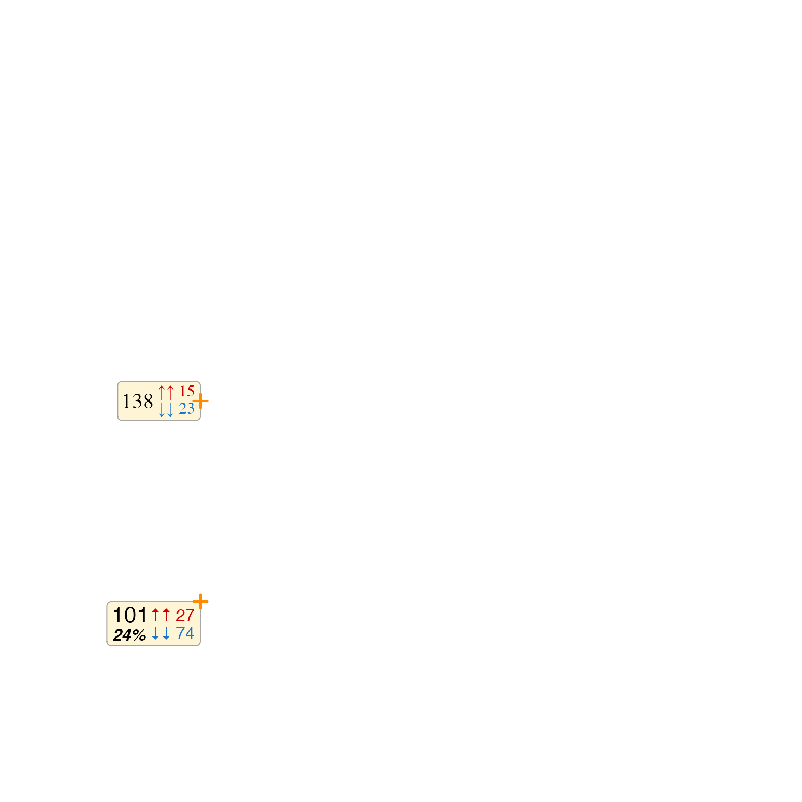

Assemble grid grobs into venndir labels
Source:R/venndir-assemble-label.R
assemble_venndir_label.RdAssemble grid grobs into venndir labels
Usage
assemble_venndir_label(
x = NULL,
y = NULL,
just = c("center", "center"),
signed_labels = NULL,
count_labels = NULL,
overlap_labels = NULL,
template = c("wide", "tall"),
fontfamily = "Helvetica",
fontfamilies = list(signed = fontfamily, count = fontfamily, overlap = fontfamily),
fontsizes = list(signed = 12, count = c(16, 12), overlap = 16),
fontfaces = list(signed = "plain", count = c("plain", "bold.italic"), overlap = "bold"),
fontcolors = list(signed = c("red3", "dodgerblue3", "grey55"), count = "black", overlap
= "black"),
label_spacing = list(signed = grid::unit(1, "mm"), count = grid::unit(1, "mm"), overlap
= grid::unit(1, "mm")),
label_padding = list(signed = grid::unit(2, "mm"), count = grid::unit(1, "mm"), overlap
= grid::unit(1, "mm")),
do_frame = TRUE,
frame_r = grid::unit(0.1, "snpc"),
frame_border = "#44444477",
frame_fill = "#FDDD6644",
text_grob_type = c("marquee", "textGrob", "gridtext", "richtext_grob"),
marquee_styles = NULL,
use_devoid = getOption("use_devoid", TRUE),
default.units = "snpc",
debug = FALSE,
verbose = FALSE,
...
)Arguments
- x, y
grid::unit, default NULL, indicating optional placement of labels. When defined, a viewport is defined for the label so it is rendered at this position.- just
characterused only whenx,yare defined, default "center" places the label at the center position; "right" will align the label so the right edge touches the x,y coordinate;c("bottom", "left")will align the label so the bottom-left corner touches the x,y coordinate.- signed_labels, count_labels, overlap_labels
charactervector, default NULL, with one or more entries indicating the label should be included.- template
characterdefault "wide" indicating the placement of counts and signed counts when both are defined:"wide"places signed counts to the right of counts."tall"places signed counts below counts.
- fontfamily
characterdefault "Helvetica" used as convenient default forfontfamilies.- fontfamilies, fontsizes, fontfaces, fontcolors, label_spacing, label_padding
listwith three named elements: "overlap", "count", "signed", providing one or more values for each type of label. When multiple values are provided for a label type, these values are recycled to the number of values.For example
signed_labels=c("^ 21", "v 24")andfontcolors=list(signed=c("red", "blue", "grey"))would usec("red", "blue")for these two labels.label_spacingdefines the line-to-line spacing for each type of label, used when there are multiple lines of text.label_paddingdefines the buffer "padding" around the final label, whether the label is single-line or multiple-line. Concise labels can be created with small label_spacing, but slightly larger label_padding.
- do_frame
logicaldefault TRUE, indicating whether to define a frame around the grouped labels, returninggrid::gTreewith the frame and labels together as one "grob".- frame_r
grid::unitdefault 0.1snpc, indicating the corner radius whendo_frame=TRUE, causing it to usegrid::roundrectGrob()instead ofgrid::rectGrob(). Note the default is proportional to the plot coordinates, not the font size.- frame_border, frame_fill
characterR colors used whendo_frame=TRUEfor the frame border, and color fill, respectively. Default is black border, cream/beige fill.- text_grob_type
characterdefault"marquee"indicating the type of text grob to use for labels. In future, this choice should be substantially improved, but for now it is user choice."marquee"usesmarquee::marquee_grob()- best overall: Supports markdown, and fallback glyph use so up/down arrows are displayed even for fonts that do not include them. Not compatible with MacOS and R-4.4.1 or older, so it will revert to"textGrob"in that specific scenario."textGrob"usesgrid::textGrob()- solid all-around, however it does not support markdown."gridtext"(deprecated) usesgridtext::richtext_grob()- alternative for markdown support, however some graphics devices show inconsistent spacing between words."richtext_grob"(deprecated) usesgridtext::richtext_grob()- alternative for markdown support, however some graphics devices show inconsistent spacing between words.
- marquee_styles
marquee_style_set, default is NULL. It is used whentext_grob_type="marquee"which is default. When provided, it is combined withmarquee::classic_style()generated using other arguments: fontsizes, fontfamily, fontfamilies, fontfaces, etc.It is mainly intended to define inline styles to use with inline labels. For example, syntax ".tag Some Text" would apply the inline style 'tag' to "Some Text". It can be used to change the font family, increase/decrease the font size.
- use_devoid
logicalwhether to open temporarydevoid::void_dev()device to prevent opening a new device or advancing the page of an existing open device. DefaultgetOption("use_devoid", TRUE). This option is experimental in 0.0.55.900 under testing.- default.units
characterstring used withgridobjects to define the default unit type for coordinates. This argument is passed byrender_venndir()to support scaled or non-scaled coordinates, where scaled uses 'snpc' and non-scaled uses 'native'. The 'snpc' imposes a square viewport.- debug
characterdefault FALSE, indicating whether to run one of the debug modes used for testing:"overlap"will display the label at the center of the plot."groblist"will return alistof grobs: signed_grobs, count_grobs, overlap_grobs."list"will return alistof grobs as "groblist", then theoverlap_framewhich contains thegTreeorgtablefinal grob.
- verbose
logicalindicating whether to print verbose output.- ...
additional arguments are ignored.
Details
Grobs are defined by signed_labels, count_labels, and overlap_labels,
or when any argument is NULL the label is skipped.
The labels are assembled with the following rules:
For each of the labels, when multiple values are provided, they are stacked on top of each other.
For
signed_labels, they are left-justified whentemplate="wide", otherwise they and all other labels are center-justified.
When both
count_labelsandsigned_labelsare defined, they are combined according totemplate:template="wide": combinescount_labelson the left, andsigned_labelson the right. They are center/middle-justified relative to each other, in terms of height.template="tall": combinescount_labelson the top, andsigned_labelson the bottom.
The combined labels of
count_labelsand/orsigned_labelsare arranged center-justified underneathoverlap_labels, whenoverlap_labelsis defined.For each label, the font settings are applied in order, or recycled to the vector length. For example if
signed_labelscontains three values, thenfontsizes$signedis recycled to length 3, and applied to each label in order.fontsizes: applies to each label in orderfontfamilies: by default usesfontfamilyfor all labels, but permits any label to use a custom fontfontfaces: applies fontface to each label in order, with recognized values: "plain", "bold", "italic", "bold.italic"fontcolors: applies font color to each label in order
See also
Other venndir internal:
assign_degree_groups(),
check_systemfonts_family(),
expand_range(),
get_venn_polygon_shapes(),
make_degrees_clockwise(),
make_venn_combn_df(),
match_list(),
print_color_df(),
render_venndir_footnotes(),
shrink_df(),
simple_ellipse(),
subset_systemfonts(),
venndir_label_style(),
venndir_to_df()
Examples
vl <- assemble_venndir_label(
signed_labels=c("\u2191\u2191 15",
"\u2193\u2193 23"),
debug="overlap")
vl <- assemble_venndir_label(
overlap_labels=c("\u2191\u2191 15",
"\u2193\u2193 23")[1],
debug="overlap")
vl2 <- assemble_venndir_label(
signed_labels=c("\u2191\u2191 15",
"\u2193\u2193 23"),
count_labels=c("38"),
debug="overlap")
vl3 <- assemble_venndir_label(
signed_labels=c("\u2191\u2191 15",
"\u2193\u2193 23"),
count_labels=c("38"),
overlap_labels="Set Name Goes Here",
debug="overlap")
vl4 <- assemble_venndir_label(template="wide",
signed_labels=c("\u2191\u2191 15",
"\u2193\u2193 23"),
count_labels=c("38", "12%"),
overlap_labels="Set Name Goes Here",
debug="overlap")
vl5 <- assemble_venndir_label(
signed_labels=c("\u2191\u2191 15",
"\u2191\u2193 8",
"\u2193\u2193 23"),
fontcolors=list(count="black", signed=c("red3", "darkorchid", "dodgerblue3")),
count_labels=c("46", "12%"),
overlap_labels="Set Name Goes Here",
debug="overlap")
vl6 <- assemble_venndir_label(
signed_labels=c("\u2191\u2191 15",
"\u2193\u2193 23"),
#count_labels=c("38", "12%"),
overlap_labels="Set Name Goes Here",
debug="overlap")
# example preparing multiple labels, one at a time
vlxy1 <- assemble_venndir_label(fontfamily="Times",
just="right",
x=grid::unit(0.25, "snpc"), grid::unit(0.5, "snpc"),
count_labels=c("138"),
signed_labels=c("\u2191\u2191 15",
"\u2193\u2193 23"))
vlxy2 <- assemble_venndir_label(template="wide",
just=c("right", "top"),
x=grid::unit(0.25, "snpc"), grid::unit(0.25, "snpc"),
count_labels=c("101", "24%"),
signed_labels=c("\u2191\u2191 27",
"\u2193\u2193 74"))
# each label can be drawn individually, or combined into gList (below)
new_gtree <- grid::gTree(children=grid::gList(
vlxy1, vlxy2))
grid::grid.newpage();
grid::grid.draw(new_gtree);
grid::grid.points(x=grid::unit(c(0.25, 0.25), "snpc"),
y=grid::unit(c(0.50, 0.25), "snpc"),
pch=3,
gp=grid::gpar(cex=0.8, lwd=2, col="darkorange"));
